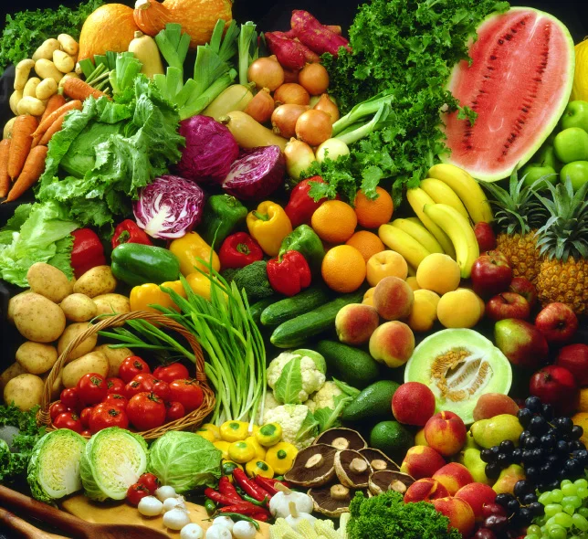
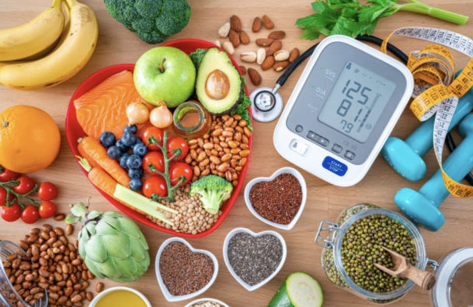

Importancia
¿Qué tan importante es comer saludable?
Su importancia se debe ya que es crucial para tu salud vital y mental, logrando mantener un peso adecuado ayudando a prevenir enfermedades, mejorando tu calidad de vida

Ayuda bastante al rendimiento fisico aumentando la resistencia fisica y bajando la fatiga considerablemente
La alimentación saludable es crucial en ambitos como el deporte, ya que esos alimentos le dan los nutrientes y resistencia necesaria para competir en esos ambitos, igualmente sirve para recuperarse de lesiones.

enlace al darle click
Ademas de que en muchas ocasiones puede ayudar a la calidad de vida logrando ser mucho mas longeva al estarse cuidando mas su alimentación